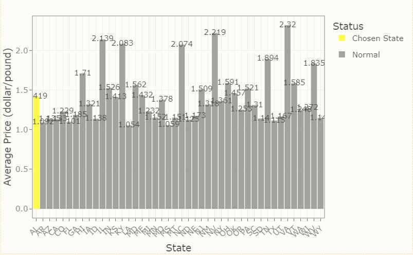

The goal of honeyproduction package is to show summary information on overall honey production by state, average value by state, as well as a trend graph of overall production and a histogram of average honey unit price by state, to help people better understand the data.
The package documentation website is here.
Installation
You can install the development version of honeyproduction from GitHub with:
# install.packages("devtools")
devtools::install_github("etc5523-2022/rpkg-yche0537")Usage
Data
library(honeyproduction)
HoneyProduction %>% head()
#> state year numcol yieldpercol totalprod priceperlb prodvalue
#> 1 AL 1998 16000 71 1136000 0.72 818000
#> 2 AZ 1998 55000 60 3300000 0.64 2112000
#> 3 AR 1998 53000 65 3445000 0.59 2033000
#> 4 CA 1998 450000 83 37350000 0.62 23157000
#> 5 CO 1998 27000 72 1944000 0.70 1361000
#> 6 FL 1998 230000 98 22540000 0.64 14426000Above is the subset view of the HoneyProduction data.
Honey Production Shiny Application
You can also run the shiny application of the honey data by using below syntax:
run_app()Honey production changing trend by year
You can use the function production_plot to get the overview plot containing the curve of the change in the total honey production of each state from 1998 to 2012.
Specifically the output is the line graph of the honey production value for all states, regardless of whether argument has an input or not.
Summary of Total Honey Production of US States(1998-2012)
yearly_production(2000)
#> # A tibble: 6 x 1
#> .[," totalprod"]
#> <chr>
#> 1 "Min. : 192000 "
#> 2 "1st Qu.: 529500 "
#> 3 "Median : 1725000 "
#> 4 "Mean : 5106000 "
#> 5 "3rd Qu.: 4670000 "
#> 6 "Max. :34500000 "This yearly_production function is used for showing the summary information (i.e. minimum, Q1, median, Q3, maximum) of total production of US in the period of 1998 to 2012.
The Average Value of Every State
ave_value("AL")
#> # A tibble: 1 x 2
#> state ave_value_dollar
#> <chr> <dbl>
#> 1 AL 1001933.This is a function that can calculate the average honey value that created by every state in US.
A tibble of dataset that contained the state name and mean honey value of that state will be the output.
Average price plot of honey in every state
price_plot("AL")
The aveprice_plot function returns a bar chart showing the average price of honey in each state, with selected states highlighted and others grayed out, meanwhile each state’s price data displayed on its own bar.